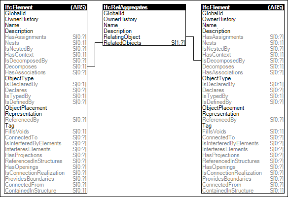

Link to this page
Link to this pageProvision of an aggregation structure where the element is part of another element representing the composite. The part then provides, if such concepts are in scope of the Model View Definition, exclusively the following:
The part may also provide, in addition to the aggregate, more specificly the following:
The part should not be contained in the spatial hierarchy, i.e. the concept Spatial Containment shall not be used at the level of parts. The part is contained in the spatial structure by the spatial containment of its composite.
EXAMPLE An IfcBeam may be aggregated into an element assembly using the objectified relationship IfcRelAggregates, refering to it by its inverse attribute SELF\IfcObjectDefinition.Decomposes. Any subtype of IfcElement can be an element assembly, with IfcElementAssembly as a special focus subtype. In this case it should not be additionally contained in the spatial hierarchy, i.e. SELF\IfcElement.ContainedInStructure should be NIL.
Figure 61 illustrates an instance diagram.
 |
Figure 61 — Element Composition |